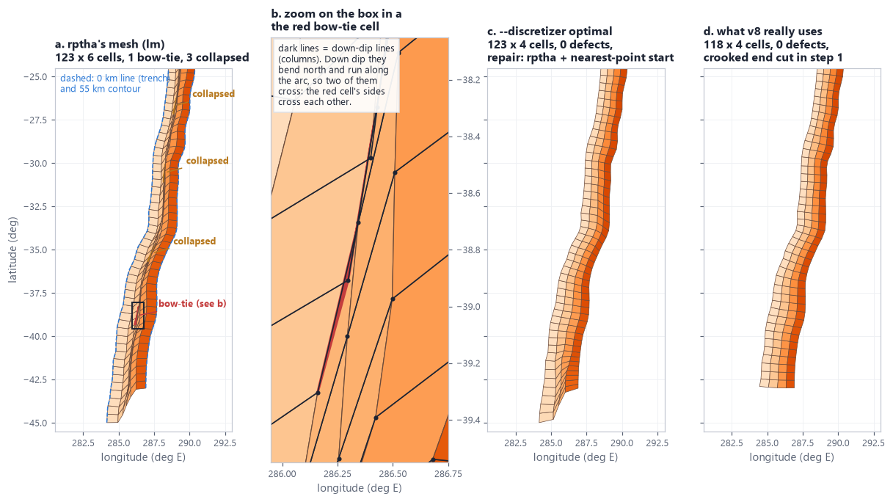
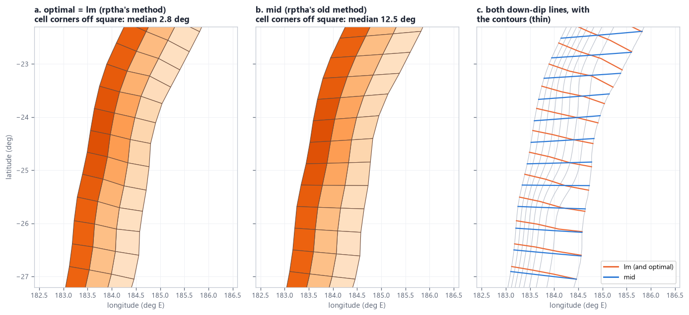

2. --discretizer: optimal, lm and mid
The option chooses how step 2 turns the contours into cells. lm is rptha's method exactly as PTHA18 ran it. optimal (the default) is the same method with a safety net: it checks the mesh and repairs it only if a cell is folded, collapsed or overlapping. mid is rptha's older method, kept for comparison. This page shows what a broken mesh is, each repair, and the three methods side by side on real zones.
At a glance
optimal returns exactly lm's mesh; this is the case on all 8 examples, because step 1's clean ends remove the usual cause of folds before step 2 runs.| You want | Use |
|---|---|
| PTHA18's automatic mesh, guaranteed usable (the normal case) | --discretizer optimal |
| rptha exactly, even if the mesh is broken (for comparison or diagnosis) | --discretizer lm |
| To see how much the orthogonal optimisation matters | --discretizer mid |
The choice is written into step 2 (DISCRETIZER) and into the input JSON ("discretizer"), so the engine builds the same mesh. Code: pyptha_v12/contour_discretisation.py: discretized_source_from_contours_optimal(), discretized_source_from_contours_orthogonal() (lm), discretized_source_from_contours_mid().
What a broken mesh looks like
A mesh is unusable if any cell has no sensible area or shape, because the area, dip and length of the cells feed every rate. mesh_defects counts four kinds of defect. It works in a local flat projection (longitude multiplied by the cosine of the mean latitude) and only compares areas with each other, so the projection's scale does not matter.
| defect | exact test in mesh_defects | how it is counted in total |
|---|---|---|
| bow-tie (folded) cell | the quadrilateral of the cell is not a valid polygon (shapely is_valid is false) | one per cell |
| collapsed (degenerate) cell | cell area < 2% of the median cell area | one per cell |
| overlap | 1 - (area of the union of all cells) / (sum of cell areas) > 0.001 | +1 for the whole mesh |
| non-finite | any value of the grid array is NaN or infinite | the number of such values (then the other checks are skipped) |
Step 2 prints this check on every run, whatever --discretizer is, for example mesh check: 0 folded (bow-tied) cells, 0 collapsed cells, 0.00% overlapping area. A non-zero count adds <-- inspect the mesh figure to the line.
Where in the code: contour_discretisation.py mesh_defects(), _cell_polygons(). Not part of rptha: this package's own check.
--discretizer optimal
optimal (the default) means: rptha's own mesh, unless it is broken. It builds exactly the lm mesh, runs mesh_defects on it, and returns it unchanged if nothing is wrong. Only when the check finds a defect does it try, in order, three repairs that depart from rptha as little as possible, and it keeps the first one with no defect.
align_contour_ends refuses (a contour would keep less than half its length), repairs b and c are skipped and the log says so.A real mesh that breaks, and how optimal repairs it
None of the 8 final examples needs a repair, because step 1 now cuts crooked zone ends before the mesh is built (clean ends). To show the repair path on real data, make_step2.py rebuilds southamerica's contours with step 1's own function but before its end cut (lib/slab_contours.below_trench_contours, whose result keeps the uncut set as contours_untrimmed), then meshes them with step 2's settings (50 km, 50 km, at least 2 rows). There the trench (0 km line) runs south to 44.99 S, while the 55 km contour stops at 43.00 S.

optimal returns: repair a, 123 x 4 cells, no defect. (d) The mesh the example really uses: step 1 cut the crooked south end, so rptha's own mesh (118 x 4) is already clean.optimal's own log for (c), as printed:
optimal: rptha's own mesh has defects (1 bow-tied, 3 collapsed, overlap 0.20%) -> trying repairs
optimal: rptha + nearest-point start: 0 bow-tied, 0 collapsed, overlap 0.00%
optimal: using 'rptha + nearest-point start'
| southamerica mesh | cells | bow-tie | collapsed | overlap | area, km2 | mean dip |
|---|---|---|---|---|---|---|
| (a) rptha (lm), uncut contours | 123 x 6 | 1 | 3 | 0.197% | 1,184,931 | 13.21° |
| (c) optimal, uncut contours: repair a | 123 x 4 | 0 | 0 | 0.000% | 1,186,946 | 16.14° |
| (d) final mesh (clean ends, rptha unchanged) | 118 x 4 | 0 | 0 | 0.000% | 1,163,678 | 16.62° |
Two things to notice. First, the broken mesh has 6 rows, not 4: its slanted lines are longer than lines that go straight down dip, so the width rule gives more rows. Second, its mean dip is 3 degrees too shallow (13.21 against 16.14): a line that runs partly along the arc descends more slowly, so the dip measured along it is lower. A broken mesh does not only have a few bad cells; it biases the whole zone. That is why the check exists. (Numbers printed by make_step2.py; the southamerica runs take about 10 minutes the first time and are cached.)
Where in the code: contour_discretisation.py discretized_source_from_contours_optimal(). Called by step 2 (DISCRETIZER == "optimal") and by run_logic_tree.py build_grid() when the input JSON says "discretizer": "optimal" and the saved grid cannot be reused.
The repairs, one by one
Both repairs attack the same cause. rptha pins the first and last down-dip lines to the contours' end points (s = 0 and s = 1 on every contour), and starts all the others at the same fraction of every contour. When the contours end at different places along the arc (the shallow one reaching further than the deep one, as on southamerica), equal fractions of contours of different length are at different places. The start lines are slanted, and LM, which only improves the guess it is given, can stay in that slanted solution. Near the end, the pinned edge line is even forced to run along the arc.
a. Nearest-point start
Same contours, same objective, same optimiser: only the starting guess of the coarsest multigrid level changes. The trench keeps evenly spaced points. For each of them, every deeper contour starts at the point nearest to it (searched over 2,000 points along that contour). Where the trench reaches beyond a deeper contour, several nearest points pile up on that contour's end; they are forced to increase by a tiny step (1e-6) so the start is valid, with the ends kept at 0 and 1.
Where in the code: _nearest_point_init_s_matrix(), used through _optimise_s_matrix(init="nearest") for the coarsest level only. Not part of rptha, and never used by lm.
b. End-aligned contours
This repair changes the input instead of the start: every contour is trimmed back to the along-strike span that all levels share. Each contour's two end points are projected onto every other contour (by the nearest of 4,000 points along it). At each end, every contour is cut at the innermost of those projections. After that, all contours start and finish on a common line across the zone, so the pinned edge lines go straight down dip like the interior ones.
Where in the code: align_contour_ends(), _arc_fraction_of(), _cumulative_km(). Not part of rptha.
c. Both, and the fallback
Repair c is b's trimmed contours with a's nearest-point start. If none of a, b, c is defect-free, the candidate with the fewest defects (counting rptha's own mesh) is kept, ties broken by the larger area, and the log prints WARNING optimal: no repair removed every defect; using '...'. Inspect the mesh figure before trusting this zone. None of the 8 examples' run_final.log contains this warning.
Why the contours are not always end-aligned tested on PTHA18's own contours
End alignment removes folded tip cells when the shallow contours stop far from the deep ones along the zone (end gaps of 121 and 209 km on kermadectonga2's raw contours, 33 and 57 km on puysegur2's). One could apply it to every zone, or whenever it lowers the worst edge column's badness.
Run on PTHA18's own contours, where the right answer is known (PTHA18's published mesh), that rule moves away from PTHA18 on every zone it touches: cascadia loses 6 of its 22 columns (-13.8% area), puysegur2 -2.5%, solomon2 -1.5%, izumariana -1.1% (from the docstring of discretized_source_from_contours_optimal). Folded tips come from contours whose ends disagree, not from rptha's method: with step 1's contours (one unbroken line every 5 km, crooked ends cut) rptha's own mesh has no defect on any of the 8 examples.
So optimal keeps rptha's mesh whenever it is healthy, and uses the trimming only as a repair, after the gentler nearest-point start.
--discretizer lm
lm is rptha's method exactly as PTHA18's template (make_initial_downdip_lines.R) calls it, with no check and no repair: discretized_source_from_contours_orthogonal(). The name comes from the Levenberg-Marquardt optimiser. Whenever rptha's mesh has no defect, lm and optimal give the same grid: that is the case on all 8 examples. Use lm to reproduce PTHA18's automatic method strictly, or to see a broken mesh as rptha makes it.
Given PTHA18's own published contours (NCI DATA/SOURCEZONE_CONTOURS.zip), the Python discretiser reproduces PTHA18's published mesh. Output of validate_v9.py mesh, re-run for this page (about 5 minutes):
| zone | cells (rows x columns) | area vs PTHA18 | mean dip, this code / PTHA18 | node offset, median | max |
|---|---|---|---|---|---|
| puysegur2 (35 km) | 2 x 14 | +0.000% | 36.179 / 36.179 | 0.0 m | 0 m |
| cascadia | 3 x 22 | -0.002% | 10.114 / 10.125 | 0.0 m | 8,973 m |
| makran2 | 8 x 20 | +0.000% | 6.096 / 6.096 | 0.0 m | 0 m |
| kermadectonga2 | 3 x 72 | +0.000% | 16.007 / 16.007 | 0.1 m | 1 m |
| newhebrides2 | 2 x 38 | +0.002% | 24.172 / 24.175 | 43.7 m | 858 m |
| philippine | 2 x 33 | +0.000% | 30.464 / 30.464 | 0.0 m | 0 m |
| izumariana | 2 x 70 | +0.000% | 19.125 / 19.125 | 0.1 m | 4 m |
| solomon2 | 2 x 42 | -0.000% | 30.406 / 30.406 | 3.2 m | 31 m |
| newguinea2 | 6 x 21 | +0.000% | 8.469 / 8.469 | 0.0 m | 0 m |
| mexico | 3 x 58 | +0.000% | 21.420 / 21.420 | 0.0 m | 3 m |
| kurilsjapan | 4 x 61 | +0.000% | 16.682 / 16.682 | 0.0 m | 0 m |
| alaskaaleutians | 4 x 78 | +0.004% | 16.006 / 15.991 | 0.2 m | 12,097 m |
| sunda2 | 4 x 120 | +0.000% | 13.376 / 13.376 | 1.8 m | 72 m |
| southamerica | 4 x 165 | +0.001% | 15.877 / 15.877 | 29.8 m | 431 m |
All 14 PASS: same dimensions everywhere, area within 0.004%, and on most zones the nodes coincide to the metre. On cascadia and alaskaaleutians a few nodes differ by 9 and 12 km while the median is under a metre; the area and dip still agree to 0.004%. The cause of those few nodes was not investigated for this page. validate_v9.py calls optimal here, which returns rptha's mesh unchanged unless it finds a defect (it runs silently, so the log does not say which).
Where in the code: validation/validate_v9.py check_mesh(); test test_mesh_reproduces_ptha18_grid (puysegur2, every node within 5 m of PTHA18's, 0 defects). More in Validation.
--discretizer mid
mid is rptha's older, deprecated method (create_downdip_lines_on_source_contours, used when improved_downdip_lines = FALSE). PTHA18 does not use it; it is kept only for comparison. There is no optimisation:
- The shallowest and the deepest contours are each resampled into the same number of evenly spaced points (one per 50 km of trench, plus one).
- Point i of the shallow contour is joined to point i of the deep contour by a straight (great-circle) cut, extended by a tiny fraction at both ends.
- Each cut is intersected with every contour to get its crossing points. If a cut crosses a contour more than once, R stops ("Non-unique contour levels"); so does the Python code.
- Rows and the 3D resampling are the same as in
lm.
The name is historical. rptha builds three candidate cuts ('eq_spacing', 'nearest', 'mid') but its code uses 'eq_spacing': the 'mid' line is commented out in the R source. The Python port follows the R code as it runs ('eq_spacing'); the option keeps the name mid.

| zone | method | cells | area, km2 | mean dip | corner off square: median / 90% / max | defects |
|---|---|---|---|---|---|---|
| kermadectonga2 | lm = optimal | 73 x 3 | 542,559 | 15.42° | 2.8 / 11.3 / 39.4° | 0 |
| mid | 73 x 3 | 541,069 | 14.55° | 12.5 / 34.5 / 41.0° | 0 | |
| makran2 | lm = optimal | 20 x 8 | 382,203 | 6.06° | 8.0 / 22.0 / 32.3° | 0 |
| mid | 20 x 8 | 382,308 | 6.00° | 12.0 / 24.3 / 38.7° | 0 | |
| puysegur2 | lm = optimal | 13 x 2 | 43,468 | 36.63° | 3.6 / 10.1 / 16.8° | 0 |
| mid | 13 x 2 | 43,169 | 36.15° | 9.9 / 16.8 / 32.4° | 0 | |
| calabria2 | lm = optimal | 20 x 5 | 136,468 | 14.95° | 22.1 / 45.1 / 65.5° | 0 |
| mid | 20 x 5 | 137,747 | 14.32° | 22.1 / 51.8 / 62.6° | 0 |
The area barely changes (under 1%), because both methods cover the same surface. What changes is the cell shape, and with it the mean dip (a slanted line descends more slowly, so mid's dip is lower). On calabria2, a tight arc, both methods have strongly trapezoidal cells (a fan cannot be cut into rectangles) and are similar. Corner statistics: angle of every cell corner in the local projection, computed by make_step2.py.
Where in the code: discretized_source_from_contours_mid(), _intersect_dipcut_with_contours(), _extend_line(), _resample_geodesic_by_spacing(). orthogonal_near_trench (default FALSE in R) is not ported.